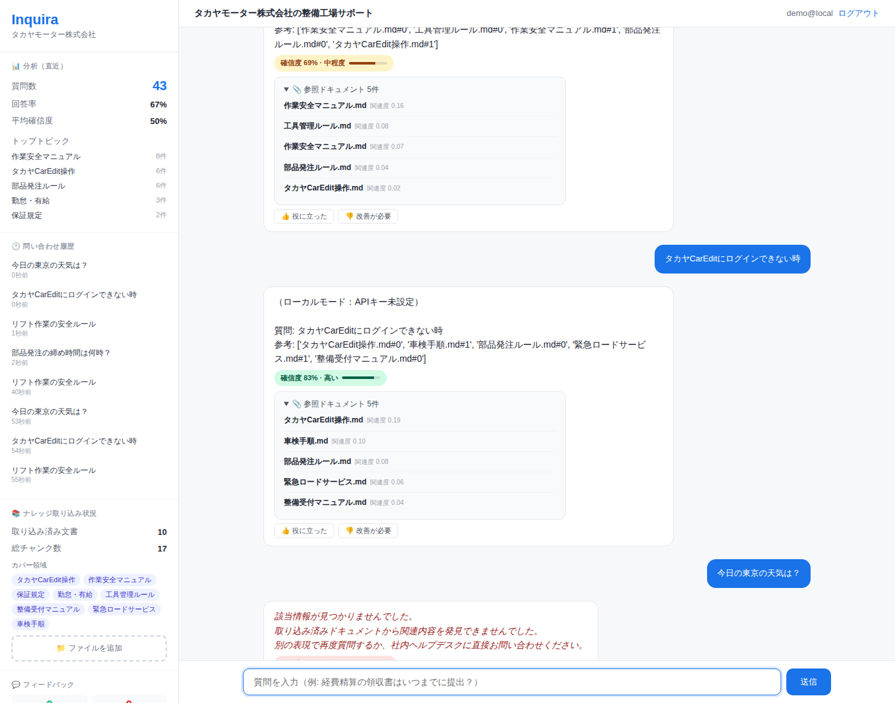
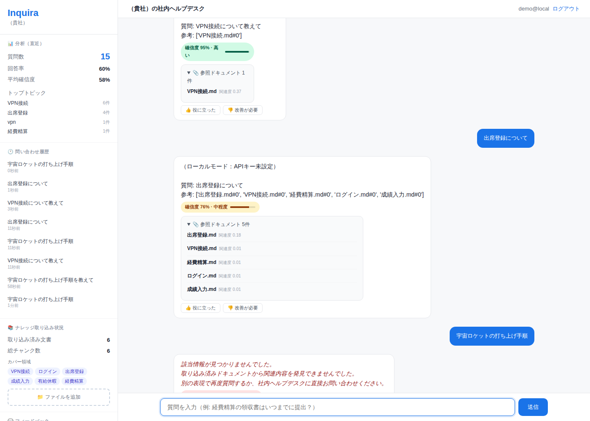
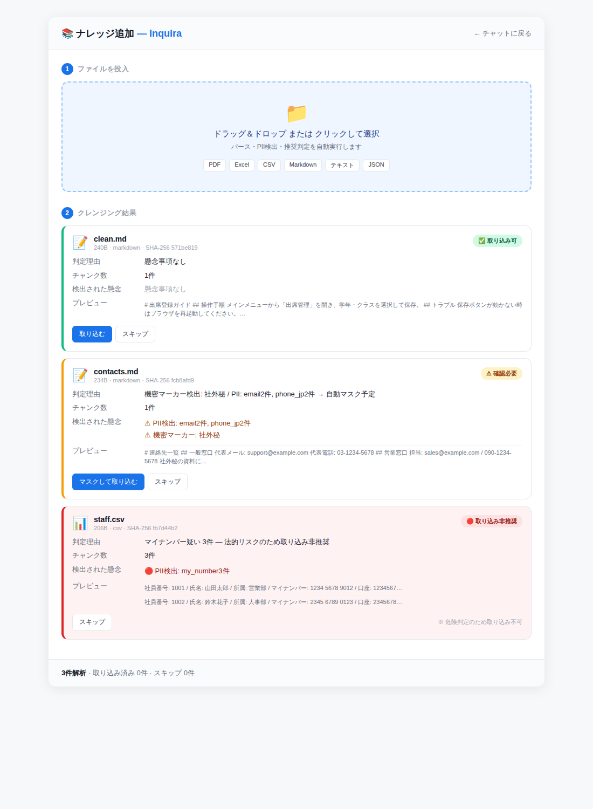

毎回マニュアルを探し、人に聞き、回答を待つ — その積み重ねが、組織全体で膨大な工数になっています。 Inquira は、その質問に AI が即座に、根拠付きで答えます。


※ 1 質問あたりの想定対応時間と人件費単価は、組織の実態に合わせて設定画面から調整できます。

社内に共有された URL を開き、「Google でログイン」→ 会社の Google アカウントを選択。
画面下の入力欄に、知りたいことを日本語で入力して Enter。数秒で出典付きの回答が返ります。
例: 経費精算の締め切りは? VPN がつながらない時は?
回答に 👍 / 👎 でフィードバック。欲しい情報が無ければ「FAQ 追加リクエスト」。
管理機能では、統計分析や削減効果も確認できます。